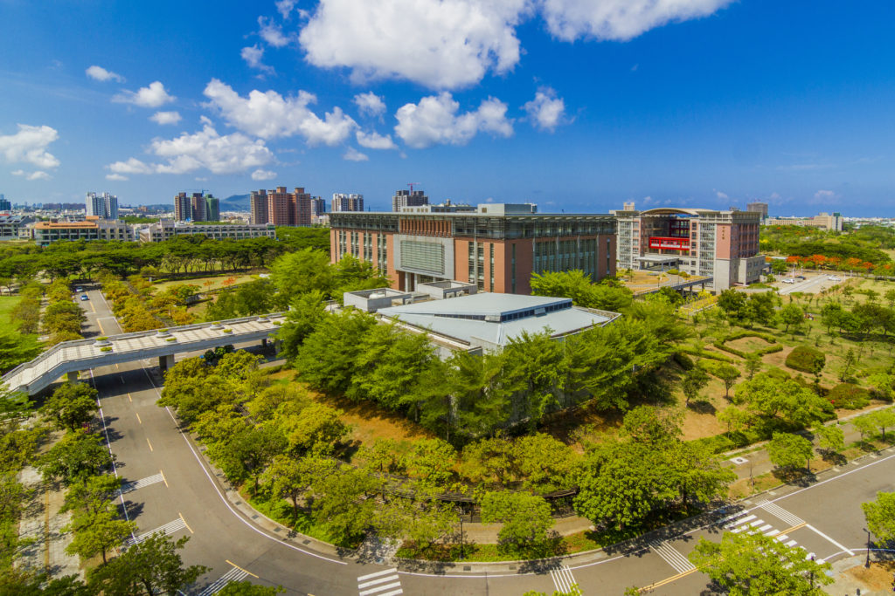

🎉 高雄大學迎新活動開跑啦！🎉
親愛的新生們
我們誠摯地邀請您參加本次迎新活動，體驗高雄大學的獨特魅力，探索嶄新的學習與成長之旅！
📅 活動日期：2025年2月21日 ~ 2025年2月21日
📍 活動地點：高雄大學活動中心
✨ 活動亮點：
- 校長致詞與迎新儀式
- 校園環境與歷史介紹
- 各大社團與組織介紹
- 精彩的表演節目與互動遊戲
- 美食攤位和大獎抽獎
🌟 高雄大學特色：
- 優美的校園環境：高雄大學擁有廣闊的綠地與優美的景觀，讓您在學習之餘享受大自然的美好
- 卓越的師資與教學：我們擁有一流的教學資源與研究設施，為您的學術成就提供最佳保障
- 豐富的社團活動：多元的社團和學生組織，讓您在課餘時間發掘興趣，結交志同道合的朋友
- 國際化的視野：多樣的國際交流項目，拓展您的全球視野，讓您在世界舞台上大放異彩
這將是一個認識新朋友、了解校園生活的重要機會。無論你是來自本地還是遠方，這裡都是你展翅高飛的地方！
快來加入我們吧，一起創造難忘的回憶！
歡迎新生！我們期待您的光臨！
👉報名連結看這裡